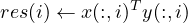

4.3 psb_gedots — Generalized Dot Product
This subroutine computes a series of dot products among the columns of two dense
matrices x and y:

If the matrices are complex, then the usual convention applies, i.e. the conjugate
transpose of x is used. If x and y are of rank one, then res is a scalar, else it is a rank
one array.
call psb_gedots(res, x, y, desc_a, info)
|
|
| res, x, y | Subroutine |
|
|
| Short Precision Real | psb_gedots |
| Long Precision Real | psb_gedots |
| Short Precision Complex | psb_gedots |
| Long Precision Complex | psb_gedots |
|
|
| |
Table 3: Data types
-
Type:
- Synchronous.
-
On Entry
-
-
x
- the local portion of global dense matrix x.
Scope: local
Type: required
Intent: in.
Specified as: a rank one or two array or an object of type
psb_T_vect_type containing numbers of type specified in Table 3. The
rank of x must be the same of y.
-
y
- the local portion of global dense matrix y.
Scope: local
Type: required
Intent: in.
Specified as: a rank one or two array or an object of type
psb_T_vect_type containing numbers of type specified in Table 3. The
rank of y must be the same of x.
-
desc_a
- contains data structures for communications.
Scope: local
Type: required
Intent: in.
Specified as: an object of type psb_desc_type.
-
On Return
-
-
res
- is the dot product of vectors x and y.
Scope: global
Intent: out.
Specified as: a number or a rank-one array of the data type indicated in
Table 2.
-
info
- Error code.
Scope: local
Type: required
Intent: out.
An integer value; 0 means no error has been detected.